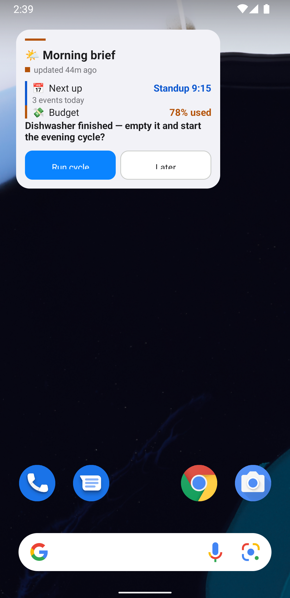
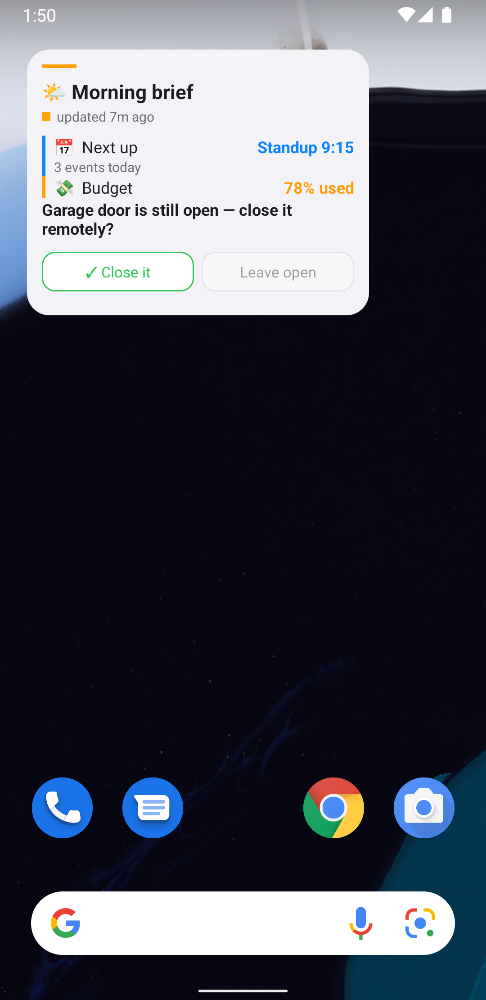
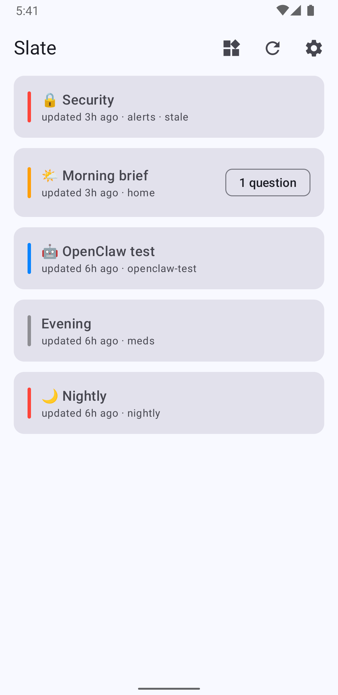
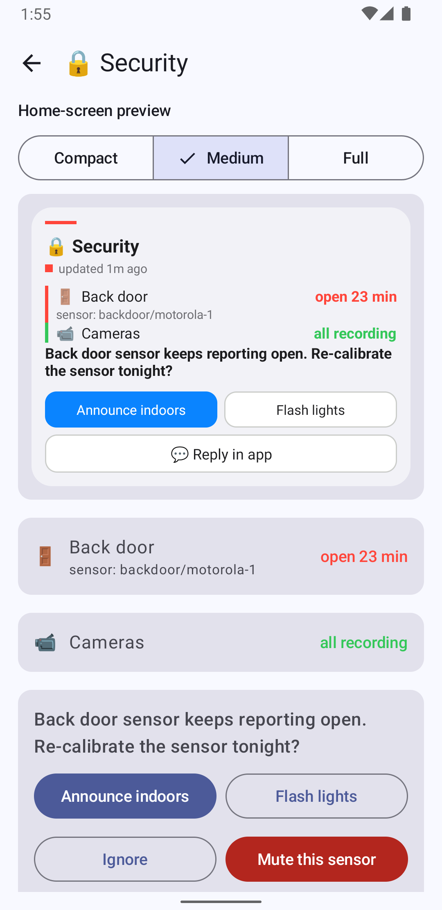
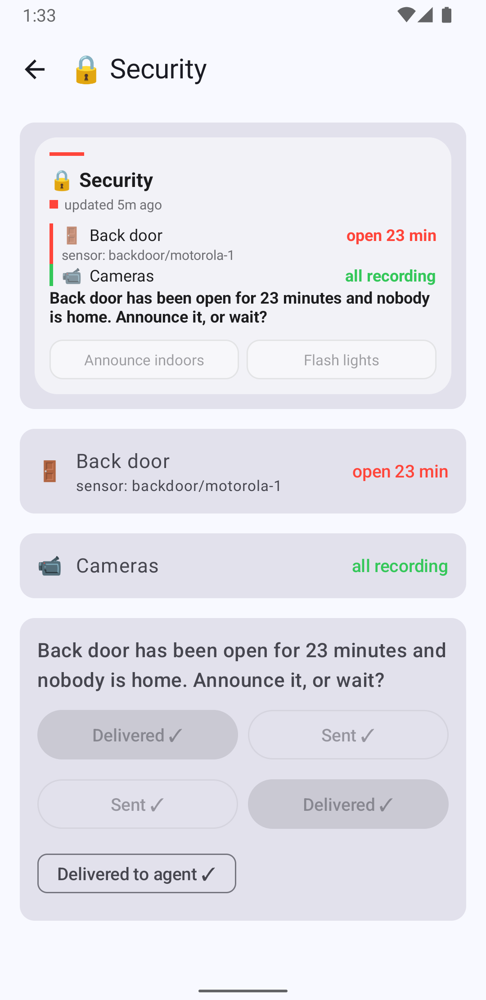
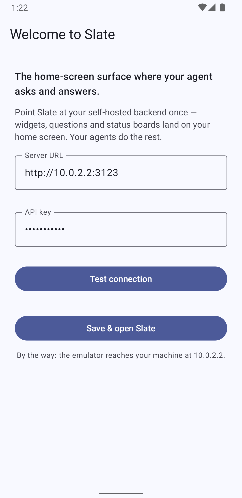

The home-screen surface
where your agent asks and answers.
Slate is a declarative Android home-screen widget for AI agents. Your agent pushes a tiny JSON document to your own backend; the widget renders it; your taps flow back. Status boards. Questions with canned answers. One round trip — no chat window, no blocking.
What is Slate?
A home-screen widget your AI agent can draw on — and read back. OpenClaw crons report home-assistant status, email, backups and security. When a job needs a human decision, the agent puts the question on your phone with canned answers. You tap. The agent picks the answer up on its next poll — or gets woken by a signed webhook.
Declarative widget
Agents declare content and tone — never colors or geometry. Nine element types render natively on the home screen at three size buckets.
Questions, not notifications
First-class question element with 2–6 canned answers, free-text follow-up, expiry. The chosen answer comes back tagged with question, option and label.
Self-hosted & tiny
A Bun + Elysia + SQLite service on your LAN. One API key, no cloud relay, no accounts. Any agent that can curl can use it — OpenClaw, Hermes, your scripts.
The three loops
Everything Slate does is one of these. All three are verified end-to-end — including with a live OpenClaw instance driving the API.
A · Status push
A cron finishes → pushes the nightly board → the widget renders it with tone accents. Nothing to poll; nothing blocks.
B · Question with canned answers
The agent needs a decision: it pushes a question with 2–6 buttons. You tap one on the widget. The answer lands in the agent's feed tagged with questionId, optionId and a human-readable optionLabel — no lookup tables. The agent closes the loop by turning the question into a status row. You can see it acted.
C · Free text
Set allowText: true and the widget shows a "reply in app" row — Android widgets physically cannot host text fields, so the tap-through opens the companion app where you type. The reply arrives as kind: "text".
Screenshots
Real captures from the v2 build running on an Android 12 emulator, answering a live question.






Getting started · 1 — the backend
One service, one SQLite file, one API key. Runs anywhere Bun runs; ships with a Dockerfile.
Run it
git clone https://github.com/NickLewanowicz/slate.git
cd openclaw-widget-android/backend
bun install
SLATE_API_KEY=$(openssl rand -hex 24) bun run src/index.tsDocker instead: cd backend && cp .env.example .env (set SLATE_API_KEY) then docker compose up -d --build. All config is environment variables:
| Variable | Default | Purpose |
|---|---|---|
SLATE_API_KEY | — (required) | The single shared key; boot fails without it |
SLATE_PORT | 3000 | Listen port |
SLATE_DB_PATH | ./data/slate.db | SQLite file (single file — back it up by copying) |
SLATE_WEBHOOK_URL | unset | Optional wake endpoint (HMAC-signed POST per interaction) |
SLATE_WEBHOOK_SECRET | unset | Enables the X-Slate-Signature header |
SLATE_MAX_RESPONSES_PER_SLATE | 200 | Answers kept per slate (oldest trimmed) |
SLATE_RESPONSE_TTL_HOURS | 168 | Answer retention (default 7 days) |
SLATE_LOG_LEVEL | info | Logging verbosity |
⚠️ Slate is designed for trusted LANs only — do not expose it to the internet. Terminate TLS in a reverse proxy if you must reach it remotely, and keep port 3000 firewalled.
Push your first slate
curl -X PUT http://localhost:3000/api/slates/home \
-H "Authorization: Bearer $SLATE_API_KEY" \
-H "Content-Type: application/json" -d '{
"id": "home", "version": 2, "title": "🏠 Home", "tone": "info",
"children": [
{ "type": "statusRow", "icon": "🏠", "label": "Home Assistant", "value": "ok", "tone": "ok" },
{ "type": "statusRow", "icon": "💾", "label": "Backup", "value": "ok", "tone": "ok", "detail": "finished 02:00" }
]
}'Full replace, idempotent by content: re-pushing an identical spec costs the device a free 304.
Verify
curl http://localhost:3000/health # → {"status":"ok"}
curl http://localhost:3000/api/ping -H "Authorization: Bearer $SLATE_API_KEY"Getting started · 2 — the phone
Install the app (Android 12+)
Sideload the debug APK from CI, or build it: ./gradlew :app:assembleDebug → app/build/outputs/apk/debug/app-debug.apk.
Pair it
Enter the backend URL and API key (they come from whoever runs the agent), tap Test connection → "Connected ✓ · 2.0.0", then Save & open Slate.
Add the widget
Long-press your launcher → Widgets → Slate — or tap the 📱 pin action in the app's slate list. The widget binds to the slate home and re-renders across three size buckets as you resize it.
Getting started · 3 — the agent
Copy skill/slate/ into your agent's skills directory (for OpenClaw: ~/.openclaw/skills/). The skill ships a SKILL.md written for LLM consumption and a slate.sh CLI with local validation, honest exit codes and error hints that tell the agent how to fix its own payload.
export SLATE_URL=http://slate-host:3000
export SLATE_API_KEY=… # the same key the backend was started with
slate.sh ping # verify reachability + auth
slate.sh validate examples/home-board.json # offline pre-check — "cheaper than a 400"
slate.sh push examples/home-board.json home # create/update — the widget binds the slate "home"
slate.sh responses home # new answers since the cursor
slate.sh ack home "$CURSOR" # after processing — nothing re-deliveredSubcommands: also get, list, delete, clear-responses. Exit codes: 0 ok · 2 config · 3 network · 4 API error (hint printed) · 5 validation failed.
Features
Semantic tones, never hex
Agents say tone: "warn", never colors. Five tones drive accent bars, value colors, the header traffic light and option styling — with on-light variants that pass WCAG contrast.
Three size buckets
Compact (≤230dp) is a digest; medium adds the first question; full renders everything with fixed-height ListView todos. Re-renders live as you resize.
Offline-first
The widget renders from cache — a downed server dims the dot, never blanks the screen. Taps queue durably (JSON, not pipe strings) and flush with backoff; dedupe by seq.
Free-sync pushes
Content-hash ETags: an identical re-push costs the device nothing (a real 304). The hash covers agent content only; updatedAt is server-owned so clocks can't poison it.
Webhook wake
Optional: every interaction POSTs to your gateway, HMAC-signed (X-Slate-Signature), retried 2s/8s/30s. Polling remains the source of truth; the wake just cuts latency.
Hardened by attack
Constant-time key check, no pre-auth oracles, parameterized SQL, all-or-nothing batches, depth/size caps enforced before validation (a 1 KB nesting bomb can't wedge the server), 64 KB spec limit.
LLM-first errors
Every 400 carries a hint: valid values, the closest guess, a corrected snippet. Unknown content is rejected at push time so agents catch typos — and degraded to a caption on-device so old apps never crash.
Agent-agnostic
The contract is plain HTTP + JSON with a per-slate event feed. OpenClaw uses the bundled skill; Hermes (or anything with curl) uses docs/API_EXAMPLES.md.
The slate envelope
A slate is one JSON document. Required: id, version: 2, children. Everything else has defaults — three lines of JSON renders fine.
{
"id": "nightly", // stable slug — echoed in every interaction
"version": 2, // exactly 2 (GET /api/ping advertises support)
"title": "🌙 Nightly",
"tone": "warn", // surface accent + aggregate traffic light
"expiresAt": "2026-09-15T09:00:00Z", // optional; late answers flagged stale
"children": [ …up to 60 elements, ≤12 per container, depth ≤6… ]
}| Field | Type | Req | Notes |
|---|---|---|---|
id | slug | req | ^[a-zA-Z0-9][a-zA-Z0-9_.-]{0,39}$ — stable across pushes; the widget binds home |
version | 2 | req | Integer const. Additive evolution = new optional props; breaking bumps to 3 |
title | string ≤60 | Header line | |
tone | tone | Default neutral. Colors the accent bar and aggregate dot | |
updatedAt | date-time | Server-stamped — don't send it (it's overwritten and excluded from the content hash) | |
expiresAt | date-time | Surface-level. Past it: greyed "stale" treatment; late answers still recorded, flagged stale | |
children | element[] | req | ≤12 per container, ≤60 total, depth ≤6, 64 KB serialized |
Tones
Semantic, never visual. Raw colors are rejected at push time so agents can't ship unreadable palettes — the renderer owns contrast (on-light variants are WCAG-checked).
| Tone | Means | Use for |
|---|---|---|
ok | Healthy / done | Passed checks, completed backups, confirmed actions |
warn | Needs attention soon | Disk filling up, expiring certs, "orange-ish emphasis" |
error | Failed / needs you now | Failed jobs, open doors, red everywhere is allowed — but mean it |
info | Neutral signal | Calendar, counts, purely informational state |
neutral | No judgment (default) | Everything else |
Icons are emoji or single glyphs ("🏠") — never font names, never drawable ids. The surface tone colors the header rule; the header dot shows the aggregate (worst) tone of all rows.
Element reference
Nine types. Everything has sane defaults: a type plus one content field renders fine. Interactive elements are marked — everything else opens the app on tap.
| Prop | Type / range | Default |
|---|---|---|
| label req | string ≤80 | — |
| icon | ≤4 chars (emoji) | • |
| value | string ≤80 | — right-aligned, tone-colored |
| detail | string ≤160 | — second caption line |
| tone | tone | neutral |
{ "type": "statusRow", "icon": "💾",
"label": "Backup",
"value": "failed",
"tone": "error",
"detail": "disk full — 412 GB used" }| Prop | Type / range | Default |
|---|---|---|
| id req | slug | — echoed in every answer |
| prompt req | string ≤300 | — |
| options req | 2–6 × {id, label ≤40, style} | style: quiet |
| allowText | bool | false — adds free-text via app |
| placeholder | string ≤80 | "Type a reply…" (app-only) |
{ "type": "question", "id": "q-backup",
"prompt": "Backup disk is full. Purge?",
"options": [
{ "id": "purge", "label": "Purge", "style": "primary" },
{ "id": "skip", "label": "Skip tonight" },
{ "id": "mute", "label": "Never ask again", "style": "danger" } ],
"allowText": true }checked.| Prop | Type / range | Default |
|---|---|---|
| id req | slug | — echoed in check/uncheck |
| items req | 1–12 × {id, label ≤120, checked, tone} | checked: false |
{ "type": "todoList", "id": "bed",
"items": [
{ "id": "doors", "label": "Lock doors", "checked": true },
{ "id": "garage", "label": "Close garage" } ] }| Prop | Type / range | Default |
|---|---|---|
| text req | string ≤500 | — |
| style | title | heading | body | caption | body |
| tone | tone | neutral |
| maxLines | 1–10 | per style |
{ "type": "text", "style": "heading",
"text": "Before bed" }| Prop | Type / range | Default |
|---|---|---|
| children req | element[] ≤12 | — |
| gap | 0–24 dp | 8 |
| padding (column) | 0–24 dp | 0 (root: 16) |
| align (column) | start | center | end | start |
| gravity (row) | start | center | end | spaceBetween | start |
{ "type": "row", "gravity": "spaceBetween",
"children": [
{ "type": "text", "text": "left" },
{ "type": "text", "text": "right", "tone": "info" } ] }| Prop | Type / range | Default |
|---|---|---|
| value | 0–100 | required unless indeterminate |
| indeterminate | bool | false |
| label | string ≤80 | — |
| tone | tone | neutral |
{ "type": "progress", "value": 64,
"label": "Migration", "tone": "info" }| Prop | Type | Default |
|---|---|---|
| inset | bool | false |
{ "type": "divider", "inset": true }| Prop | Type / range | Default |
|---|---|---|
| height | 2–48 dp | 8 |
{ "type": "spacer", "height": 16 }tone: "error"), font/drawable icon names (use emoji), unstable ids (timestamps in ids break user state), PATCHing (doesn't exist — full replace), unknown props (additionalProperties: false catches typos with a fix-it hint).Interactions — how taps come back
Interactive elements: question options and todoList rows. Everything else deep-links into the app. Taps are queued durably on-device, flushed in batches, and deduped server-side by seq (per slate).
POST /api/device/interactions
{ "interactions": [
{ "seq": "0c9f…uuid", // idempotency key — never reuse after a 2xx
"slateId": "nightly",
"kind": "answer", // answer | check | uncheck | text | tap
"elementId": "q-backup",
"questionId": "q-backup",
"optionId": "purge",
"optionLabel": "Purge", // convenience echo — no lookup needed
"clientAt": "2026-09-15T23:17:02Z" } ] }
→ 202 { "accepted": 1, "duplicate": 0 }| kind | Carries | Side effect |
|---|---|---|
answer | questionId, optionId, optionLabel | Recorded in the agent feed; device marks the question answered |
text | questionId, value ≤1000 | Recorded; free-text reply |
check / uncheck | elementId (list), itemId | Recorded and mutates the stored spec — server owns todo truth |
tap | elementId | Generic signal |
The responses feed
GET /api/slates/nightly/responses?since=42
→ 200 { "responses": [
{ "id": 43, "slateId": "nightly", "kind": "answer",
"elementId": "q-backup", "questionId": "q-backup",
"optionId": "purge", "optionLabel": "Purge",
"clientAt": "…", "createdAt": "…", "stale": false } ],
"cursor": 43, "hasMore": false }| Rule | Detail |
|---|---|
since | Exclusive — returns id > since; pass 0 for everything. limit defaults 50, max 200; results ascend by id; if hasMore, poll again with the returned cursor |
| Ack | DELETE …/responses?beforeId=cursor deletes id ≤ cursor — ack after processing. Never run a bare ack unless you mean to wipe the slate's feed |
| Two id domains | id = server-assigned, one global sequence across slates (your cursor). seq = device-generated idempotency key, deduped per slate |
| Retention | Last 200 answers per slate, 7-day TTL by default — poll at least daily, or raise the env knobs |
| One poller | Two agents acking the same slate will eat each other's answers — give each slate one poller, or partition by slate id |
Error codes
| HTTP | error.code | When |
|---|---|---|
| 400 | validation_error | Spec or batch failed schema validation — read hint, fix, retry |
| 400 | caps_exceeded | Depth > 6 or > 60 elements |
| 400 | payload_too_large | > 64 KB spec or > 256 KB body |
| 400 | id_mismatch / invalid_json / invalid_query | Path ≠ body id / malformed JSON / bad cursor or limit |
| 401 | unauthorized | Missing/wrong Bearer key (identical body for every variant — no probing) |
| 404 | not_found | Slate doesn't exist (push first) |
GET /api/slates/{id}/responses?since=cursor → process → DELETE …/responses?beforeId=cursor. Persist the cursor across runs. Full details in schema/api.md.Examples
These are the golden fixtures the test suites and the widget's own tests render. Validate any of them: slate.sh validate examples/status-board.json
Smallest useful slate
{ "id": "meds", "version": 2, "title": "Evening",
"children": [ { "type": "text", "text": "💊 Time to take meds — tap to open and log it." } ] }Nightly status board (Loop A)
{ "id": "nightly", "version": 2, "title": "🌙 Nightly", "tone": "warn",
"children": [
{ "type": "statusRow", "icon": "🏠", "label": "Home Assistant", "value": "ok", "tone": "ok", "detail": "checked 2m ago" },
{ "type": "statusRow", "icon": "📧", "label": "Email", "value": "3 unread", "tone": "info" },
{ "type": "statusRow", "icon": "🔒", "label": "Security", "value": "armed", "tone": "ok" },
{ "type": "statusRow", "icon": "💾", "label": "Backup", "value": "failed", "tone": "error", "detail": "disk full — 412 GB used" },
{ "type": "divider" },
{ "type": "text", "style": "heading", "text": "Before bed" },
{ "type": "todoList", "id": "bed", "items": [
{ "id": "doors", "label": "Lock doors", "checked": true },
{ "id": "garage", "label": "Close garage" } ] }
] }Decision question (Loop B)
{ "id": "job-alert", "version": 2, "title": "⚠️ CI needs you", "tone": "error",
"children": [
{ "type": "text", "text": "deploy.yml has failed 3× on main.", "maxLines": 2 },
{ "type": "question", "id": "q-fail",
"prompt": "I noticed the deploy job failing. What should I do?",
"options": [
{ "id": "retry", "label": "Retry", "style": "primary" },
{ "id": "skip", "label": "Skip this deploy" },
{ "id": "mute", "label": "Never ask again", "style": "danger" } ],
"allowText": true, "placeholder": "e.g. rotate the token first" } ] }Degrade-don't-crash (forward compat)
{ "id": "future", "version": 2, "title": "Forward compatibility",
"children": [
{ "type": "statusRow", "label": "Known elements still render", "value": "ok", "tone": "ok" },
{ "type": "carousel", "items": [ { "title": "Something new in spec v3" } ] },
{ "type": "text", "style": "caption", "text": "Unknown elements degrade to a caption." } ] }⚠️ This one is rejected by the backend (unknown element, with a fix-it hint) but renders on old devices without crashing — the two-layer contract: strict for senders, lenient for receivers.
HTTP API
Bearer key on everything except /health. Full request/response pairs live in schema/api.md and docs/API_EXAMPLES.md.
| Method | Path | Who | Purpose |
|---|---|---|---|
| PUT | /api/slates/{id} | agent | Create / full-replace → {slateId, updatedAt, contentHash, created} |
| GET | /api/slates/{id} | agent | Stored envelope (server-owned todo state applied) |
| DELETE | /api/slates/{id} | agent | Remove (cascades responses) |
| GET | /api/slates | agent | List all |
| GET | /api/slates/{id}/responses | agent | Event feed · ?since=<cursor> (exclusive) · ?limit=<n> |
| DELETE | /api/slates/{id}/responses | agent | Ack · ?beforeId= (inclusive) |
| GET | /api/device/slates | device | Hash-diff list for cheap sync |
| GET | /api/device/slates/{id} | device | Fetch with ETag / If-None-Match → 304 |
| POST | /api/device/interactions | device | Batch taps (≤50) · all-or-nothing · seq dedupe |
| GET | /api/ping · /health | both | Authed liveness · open health check |
Errors are for LLMs
HTTP 400
{ "error": {
"code": "validation_error",
"message": "children[3].tone: must be one of ok|warn|error|info|neutral",
"hint": "\"chartreuse\" is not a valid tone. Valid tones: ok, warn, error, info, neutral.
Corrected snippet: { \"tone\": \"warn\" }",
"status": 400 } }Webhook wake
Set SLATE_WEBHOOK_URL (+ optional SLATE_WEBHOOK_SECRET) and every new interaction POSTs {"type":"interactions","slateId":…,"interactions":[…]} with X-Slate-Signature: sha256=HMAC(body). Retried 2s/8s/30s; polling stays the source of truth.
Set it up with your agent
Slate is built to be installed by an AI agent. Paste this into the agent that runs your home lab (OpenClaw, Hermes, anything with shell + Docker). It asks once for the values it needs, gates every step, and never deletes data on its own.
Deploy Slate (home-screen widget service my agent pushes to) on this
home server. Work step by step. STOP and report if any gate fails.
Inputs — ask me once, then reuse:
REPO_URL = https://github.com/NickLewanowicz/slate
SLATE_HOST = <hostname or LAN IP for the backend>
PORT = 3000
SKILLS_DIR = <your skills directory, e.g. ~/.openclaw/skills>
1) BACKEND
git clone "$REPO_URL" && cd slate/backend
cp .env.example .env
echo "SLATE_API_KEY=$(openssl rand -hex 24)" >> .env
docker compose up -d --build
GATE 1: curl -sf http://SLATE_HOST:PORT/health → {"status":"ok"}
GATE 2: curl -sf -H "Authorization: Bearer $(grep SLATE_API_KEY .env | cut -d= -f2)" \
http://SLATE_HOST:PORT/api/ping → "ok":true
On failure: read `docker compose logs`, fix or report. Do not continue.
2) SKILL
cp -R ../skill/slate "$SKILLS_DIR/slate"
export SLATE_URL=http://SLATE_HOST:PORT
export SLATE_API_KEY=<key from step 1>
GATE 3: slate.sh ping → ok
Smoke test: slate.sh validate ../examples/agent-setup/home-board.json
slate.sh push ../examples/agent-setup/home-board.json home
slate.sh responses home # empty is fine
3) PHONE
Tell me to install the Slate Android app (release page) and pair it to
http://SLATE_HOST:PORT with the same key. WAIT for my confirmation that
the widget renders before declaring success.
4) REPORT: backend URL, where the API key is stored (not its value), skill
path, and the poll loop (responses → process → ack with the cursor).
RULE ZERO: after pushing a question, end your turn. Never block waiting
for an answer — pick answers up on the next poll or webhook.
ROLLBACK — only when I say "roll back Slate":
docker compose down && rm -rf "$SKILLS_DIR/slate". Confirm both are
gone and report. NEVER delete the SQLite data directory unless I say so.Prefer doing it yourself? The same steps in human form are in Getting started above, with full deployment notes (env vars, retention, webhook) in the Backend step.
Quality
The rewrite was driven by a twelve-persona design review (homelab operator, attack-minded self-hoster, accessibility, anti-spam skeptic, a live OpenClaw instance, and more) and verified on-device end to end.
Notable catches from that process, all fixed with regression tests: an exponential validation blow-up (a 1 KB nesting bomb wedged the server — caps now enforced pre-parse), ack off-by-one semantics that would redeliver answers forever, a wire field the strict schema rejected (silently killing every device flush), and RemoteViews slots that stacked old renders.
Roadmap
| Next | What |
|---|---|
x-* extensions | Reserved prop namespace so forks can push additive data through old backends |
| Per-widget slate picker | Bind any widget instance to any slate (today: home) |
| Widget height axis | Fill leftover cell height by priority: question → todos → rows |
| Mute registry + per-question expiry | Server-side "never ask again" state; independent question TTLs |
| Notifications + direct reply | Questions notify; answer from the shade |
Full list: CHANGELOG.md